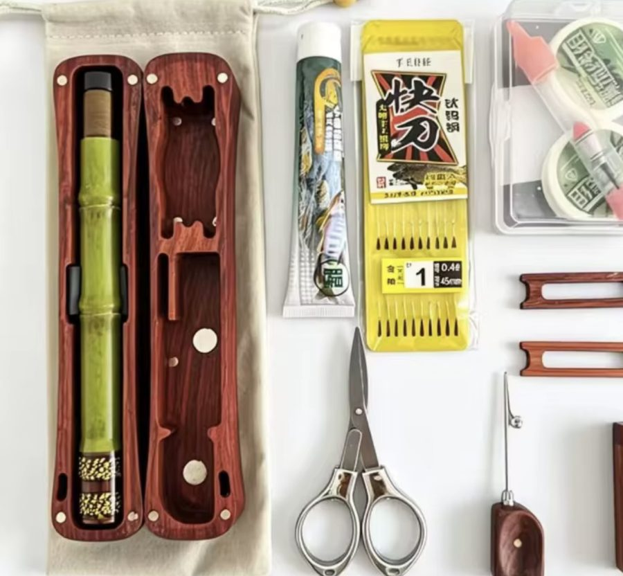
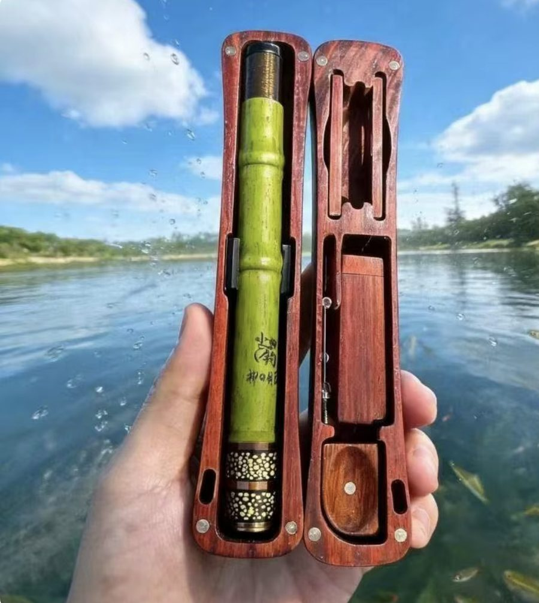
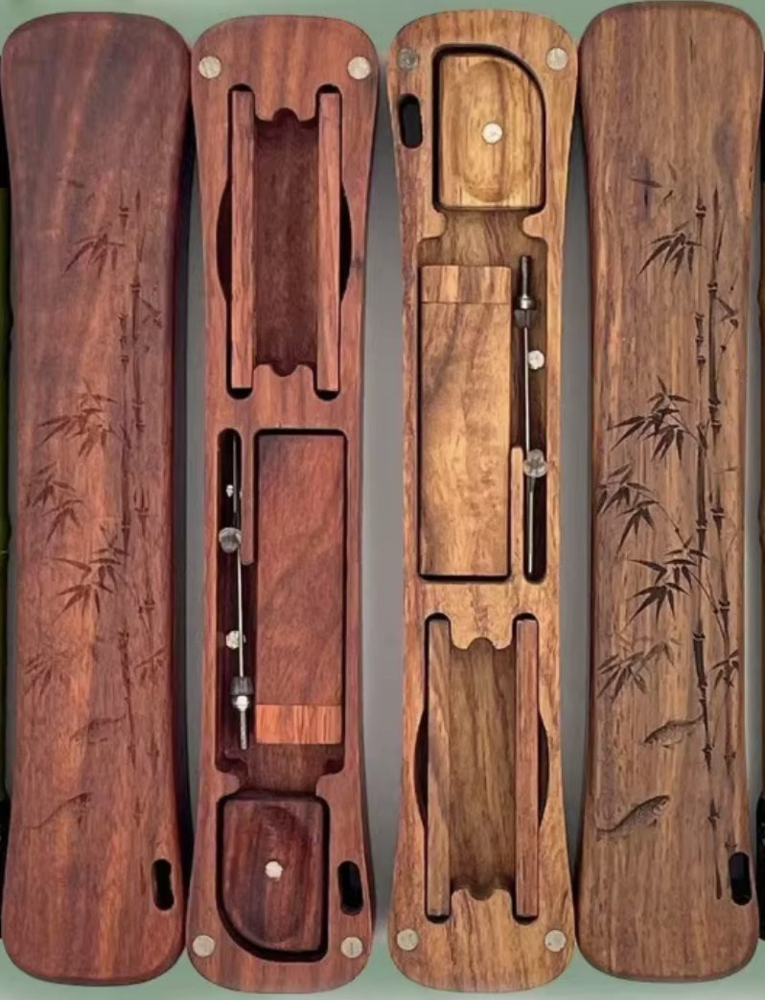
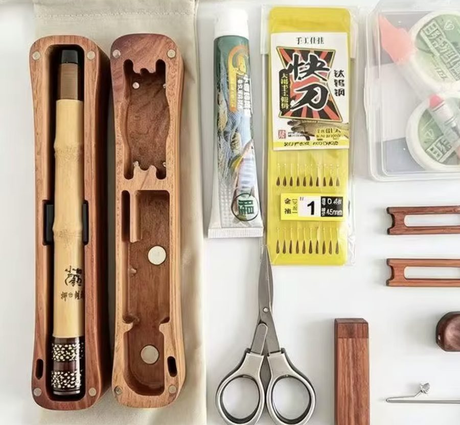
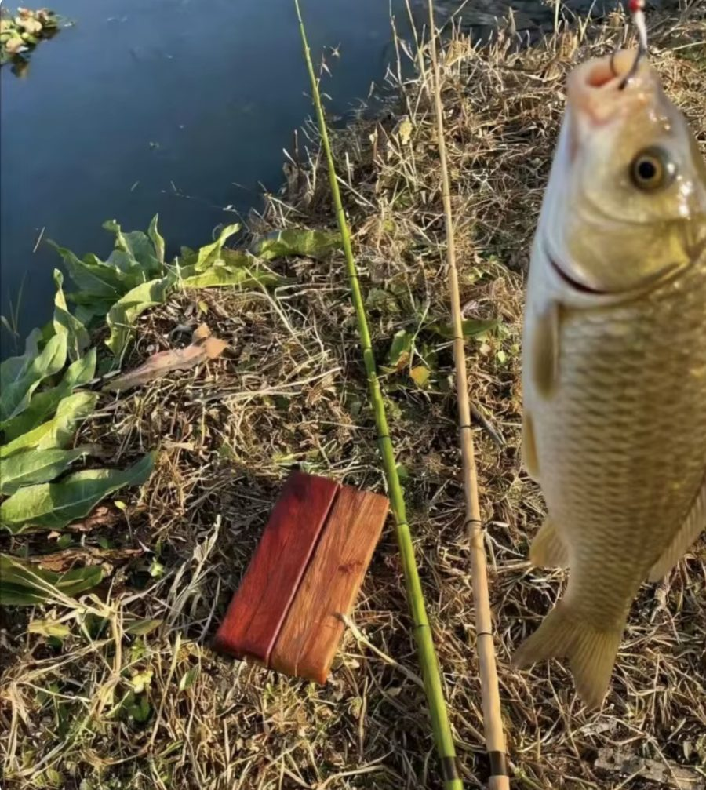

Zöld bambusz
Friss zöld bot sötét, vörösesbarna fatokban. A klasszikus.
Mini horgászbot · Limitált első széria
A Kapás zsebhorgászbot bambuszmintás karbon spiccbot. 16 centire csukódik össze, és faragott keményfa dobozban érkezik, benne zsinórral, horoggal és úszóval. Nincs orsó, nincs gubanc: kihúzod, felakasztod a zsinórt, és már dobhatsz is. Ajándéknak is különleges.

Hogyan működik
A Kapás spiccbot: a zsinór közvetlenül a bot végére kerül, ezért nem kell orsó. A régi bambuszbotok elve, mai karbonból.
A bot az egyik felében, a zsinór, a horgok és a kiegészítők a másikban, mindegyik a saját helyén.
A szekciók egymásból csúsznak ki. 16 centiből 1,7 méter lesz pár mozdulattal.
Hurok a spicc végére, horog és csali a másik végére, úszó középre. Már dobhatod is.

A dobozban
Két kivitel
Ugyanaz a bot és ugyanaz a felszerelés, két hangulatban. Az előjegyzésnél jelezd, melyik tetszik jobban.

Friss zöld bot sötét, vörösesbarna fatokban. A klasszikus.

Szalmaszínű bot meleg, világosbarna fatokban. Visszafogottabb, elegánsabb.

Ajándék és kaland
Karácsonyra, születésnapra, apák napjára: annak, akinek már mindene megvan.
A tapasztalt horgász ilyet biztosan nem kapott még. A faragott fadoboz kinyitása önmagában élmény, és aki még sosem horgászott, az is megtanul vele.
Utazó horgászbotnak készült: a doboz akkora, mint egy tolltartó, elfér a kabátzsebben és a hátizsák oldalzsebében.
Befér a kézipoggyászba. Jön veled a Balatonra, a Tiszára és a horvát mólóra.
Adatok
Kezdőknek és alkalmi horgászoknak tervezve, tavi, folyóvízi és patakos horgászatra. Kisebb halakra ideális: keszeg, kárász, sügér, ponty-ivadék.
| Anyag | karbon kompozit, bambuszmintás |
|---|---|
| Típus | teleszkópos horgászbot, spiccbot (orsó nélküli) |
| Hossz összecsukva | 16 cm |
| Hossz kihúzva | 170 cm |
| Akció | közepes |
| Doboz | keményfa, 18 × 5 cm |
| Színek | zöld bambusz · natúr bambusz |
Előjegyzés
Iratkozz fel, és lefoglaljuk neked az alapító árat. Fizetni csak akkor kell, ha megérkezett a szállítmány, és megerősíted a rendelést.
Eddig 0 előjegyzés
Kérdések
Nem. Az előjegyzés ingyenes és nem kötelez semmire. Amikor megérkezik az első széria, e-mailt küldünk, és csak akkor rendelsz, ha még mindig kéred.
Igen, és pont annak jó, akinek már minden felszerelése megvan. A Kapás nem a fő botját váltja ki, hanem az, ami mindig nála van: a kocsiban, a hátizsákban, nyaraláson. A faragott fadoboz miatt díszdoboz sem kell hozzá.
Mert spiccbot: a zsinór a bot végére van kötve, ahogy a régi bambuszbotoknál. Így nincs mit összegubancolni, és ezért fér el az egész egy 18 centis dobozban.
Igen. Kisebb halakra készült, part közeli horgászatra. Nagy pontyra vagy harcsára egy rendes bot kell, a Kapás a spontán horgászatra való.
Igen, kifejezetten kezdőknek jó. Nincs orsó, amit meg kellene tanulni kezelni, a horgok előre kötöttek, és magyar nyelvű útmutatót is adunk mellé.
Igen. Magyarországon minden horgászbothoz állami horgászjegy és az adott vízre szóló területi jegy kell, a bot méretétől függetlenül.
Az első széria akkor indul, amikor összegyűlt elég előjegyzés. Az előjegyzők elsőként kapnak pontos dátumot.
Átvételtől számítva 14 napig indoklás nélkül visszaküldheted, és visszakapod az árát.